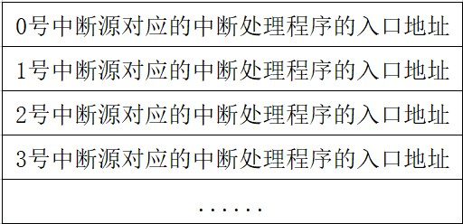
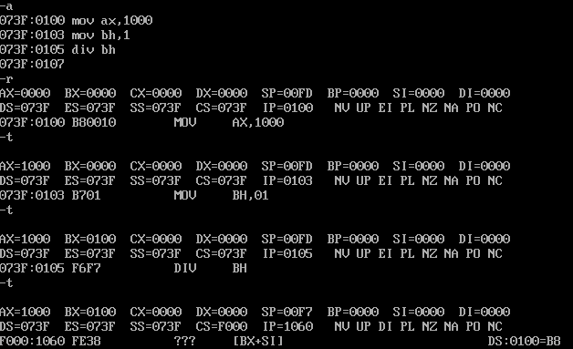

从0开始的汇编语言（十二）
前言
从0开始的汇编语言系列，选用的参考书籍是清华大学出版社，王爽老师的《汇编语言第四版》。该系列属于博主的笔记系列，文中会采用一些书中的例子，图片以及思考题供读者阅读，如需详细学习汇编语言可以购入一本，谢谢。
学习之前我们做如下约定（随着学习深入还会出现新的约定）：
- 十六进制数均以H结尾
- 使用8086CPU作为案例
- 我们使用(地址或寄存器名称)表示一个寄存器或一个内存单元的内容，()内地址是且一定是物理地址
- 我们将idata视作常量
- 我们以reg表示一个寄存器包括ax、ah、sp、bp、si、di等，sreg表示一个段寄存器包括ds、ss、cs、es。
话不多说我们马上开始。
内中断
任何一个通用的CPU都具有一个能力，可以在执行完当前正在执行的指令之后，检测到从CPU外部发送过来的或内部产生的一种特殊的信息，并且可以立即对所接收到的信息进行处理。这种特殊的信息我们可以称它为：中断信息。中断的意思是指，CPU不再接着向下执行，而是转头去处理这个特殊信息。
内中断的产生
什么情况下会产生中断信息呢？我们给出以下四种情况：
- 除法错误，比如执行div指令产生的除法溢出
- 单步执行
- 执行into指令
- 执行int指令
CPU在接收到这些信息的时候需要去处理它们，不同的信息有不同的处理方式，所以CPU要先知道中断信息的来源，所以中断信息中必须包含识别来源的编码。8086CPU用称为中断类型码的数据来标识中断信息的来源。中断类型码是一个字节型数据，可以表示256种中断信息的来源。之后我们的学习里，我们将中断信息的来源，简称为中断源。那么上述4种中断源，在8086CPU中的中断类型码如下：
- 除法错误：0
- 单步执行：1
- 执行into指令：4
- 执行int指令：int指令的格式是int idata，其中idata是一个字节型立即数，它是int指令提供给CPU的中断类型码。
中断处理程序
CPU收到中断信息后，需要对中断信息进行处理。至于如何处理中断信息，可以由我们编程决定，我们所编写出来处理中断信息的程序称为中断处理程序。一般来讲，需要对不同的中断信息编写不同的处理程序。
CPU在收到中断信息后，应该转去执行该中断信息的处理程序，那就要想办法修改CS:IP指向中断处理程序的第一条指令，所以首要问题是，CPU在接收到中断信息后，如何根据中断信息确定其处理程序的入口。如何根据8位的中断类型码得到中断处理程序的段地址和偏移地址呢？
中断向量表
CPU用8位中断类型码通过中断向量表找到相应的中断处理程序的入口地址。中断向量表又是啥子东西？中断向量表就是中断向量的列表。那中断向量又是啥子东西？？所谓中断向量，就是中断处理程序的入口地址，所以中断向量表就是中断处理程序的入口地址列表。
中断向量表在内存中保存，其中存放着256个中断源所对应的中断处理程序的入口。

可以看到，当CPU知道了中断类型码，就可以将中断类型码作为中断向量表的表项号，定位相应的表项，从而得到中断处理程序的入口地址。可是。。CPU怎么找到中断向量表呢？中断向量表被存放在内存中，8086CPU规定内存0000:0000~0000:03FF的1024个单元内必须存放着中断向量表，只要是8086CPU那么内存的这个区域就一定是中断向量表。中断向量表中的每一个表项大小占两个字，高地址字存放段地址，低地址字存放偏移地址。
中断过程
现在我们知道了可以使用中断类型码，在中断向量表里面找到中断处理程序的入口，并用其修改CS:IP，使CPU执行中断处理程序。用中断类型码在中断向量表里面找到中断处理程序，设置CS:IP的过程是CPU硬件自动完成的。CPU硬件完成这一系列工作的过程被称为中断过程。
CPU在执行完中断处理程序后，应该返回原来的执行点继续执行下面的指令，所以在中断过程中，在设置CS:IP之前还应该将原来的CS和IP中的值保存起来。所以整个中断过程应该是这样的：
- 从中断信息中取得中断信息码
- 标志寄存器的值入栈
- 设置标志寄存器的第8位TF和第9位IF的值为0（下一篇详细介绍）
- CS的内容入栈
- IP的内容入栈
- 从内存地址为中断类型码×4和中断类型码×4+2的两个字单元中读取中断处理程序的入口地址设置IP和CS
中断处理程序和iret指令
由于CPU随时都有可能检测到中断程序，所以中断处理程序必须一直储存在内存的某段空间之中。编写中断处理程序的步骤有以下四点：
- 保存用到的寄存器
- 处理中断
- 恢复用到的寄存器
- 用iret指令返回
iret指令的功能用汇编语法描述为pop IP，pop CS，popf。iret通常和硬件自动完成的中断过程配合使用，它实现了用执行中断处理程序前的CPU现场恢复标志寄存器和CS、IP的工作。iret指令执行后CPU回到执行中断处理程序前的执行点继续执行程序。
除法错误中断的处理
我们接下来通过0号中断，即除法错误中断的处理，来体会一下前面的内容。
当CPU执行div等除法指令时，如果发生了除法溢出的错误，将产生中断类型码为0的中断信息，CPU将检测到这个信息，然后引发中断过程，转去执行0号中断所对应的中断处理程序。就像这样：

可能因为DOSBox是一个模拟器，这种虚拟模式下的DOS系统的中断处理程序与其它方式进入的DOS系统的中断处理程序并不相同。所以没有显示我们想要的错误提示。
编程处理0号中断
现在我们改写一下0号中断处理程序的功能，让它可以在屏幕中间显示”OVERFLOW!”,然后返回操作系统。
我们叫这个程序为do0好了，首先我们要考虑的问题是因为0号中断随时都可能发生，所以我们编写的中断处理程序需要放在内存当中，可是具体应该是哪里呢？前面讲到，内存0000:0000~0000:03FF，大小为1KB的空间是系统存放中断处理程序的入口地址的中断向量表。8086支持256个中断，但实际上系统要处理的中断事件远没有256个，所以在中断向量表里很多单元都是空的。这些空间只用来存放中断处理程序的入口地址，DOS系统和其他程序不会随便使用这块空间，所以可以用这块空间来存放我们的中断处理程序。当然这也限制我们的中断处理程序不能超过256字节。我们打算将do0传送到0000:0200，将do0传送到0000:0200还不算完，我们还要将0000:0200登记在中断向量表的对应表项中，因为是0号中断，所以中断程序的段地址应该在0000:0002字单元中，偏移地址应该在0000:0000字单元中。
综上所述我们要做这样几件事：
- 编写可以显示”OVERFLOW!”的中断处理程序do0
- 将do0送入内存0000:0200处
- 将do0的入口地址0000:0200储存在中断向量表0号表项中
所以程序的框架应该是这样的：
1 | assume cs:code |
这个程序执行过后将我们写好的中断处理程序复制到了内存的0000:0200处，将do0的入口地址储存在中断向量表中了。接下来我们一点点将程序补完吧！
安装
我们可以使用之前说的串传送指令movsb，do0的代码送入0000:0200，程序如下：
1 | assume cs:code |
我们看一下程序中我们应该可以对应上的数据：
- 传送的原始位置，段地址：code，偏移地址：offset do0
- 传送的目的位置：0000:0200
- 传送的长度：do0部分代码长度
- 传送的方向：正向
那么我们就可以将程序补充成这样子滴：
1 | assume cs:code |
现在我们面临了一个问题，我们怎么知道do0部分的代码长度呢？最简单的方法是，计算一下do0中所有指令码的字节长度，但这样做太麻烦了，而且写成确定的数字也不利于我们以后的更改。所以我们可以让编译器为我们代劳计算do0的长度。这样代码又变成了这样：
1 | assume cs:code |
“-“是编译器识别的运算符号，编译器可以用它进行两个常数的减法。就好比mov ax,8-4会被编译器翻译成mov ax,4一样。
接下来我们来补全do0代码。
do0
我们已经分析好do0的工作了所以这里直接给出代码：
1 | assume cs:code |
这里我们来剖析一下代码：
首先，“OVERFLOW！”没有被存储在一个数据段里，而是和do0一同储存在了代码段里，这是因为如果将字符串存在数据段里，待程序执行完毕，数据段内容会被释放，这样do0程序以后就找不到字符串了，所以我们将字符串一并的存放在代码段中。
其次，因为do0程序开始处的“OVERFLOW!”不是可以执行的代码，所以在它之前要加上一个jmp指令，跳转到正式的do0程序。
最后，do0程序执行过程中必须要能找到“OVERFLOW!”，那么它在哪里呢？首先来看段地址，肯定是code段了和do0在一个段地址，再看偏移地址，0000:0200处指令为jmp short do0start，这条指令占两个字节所以，“OVERFLOW!”的偏移地址为202H。
设置中断向量
下面要将do0的入口地址0000:0200写入0号表项中。0号表项地址为0000:0000，其中0000:0000字单元放偏移地址，0000:0002放段地址，所以程序如下：
1 | mov ax,0 |
单步中断
基本上，CPU在执行完一条指令后，如果检测到标志寄存器TF位为1，则产生单步中断，引发中断过程。单步中断的类型码为1，它引发的中断过程如下：
- 取得中断类型码1
- 标志寄存器入栈，TF、IF设置为0
- CS、IP入栈
- (IP)=(1×4)，(CS)=(1×4+2)
如上所述，每执行完一条指令，CPU就要转去执行一次1号中断处理程序，CPU为什么要这样做呢？
我们在使用debug的T命令时，有没有想过这样的问题，debug凭什么可以让程序执行完一条指令后显示各个寄存器的值？我们知道程序的运行就是CS:IP指向程序入口，然后CPU自动向下读取，如果没有外加其他功能，CPU应该是一加上电，它就从预设的地址开始执行下去，不会出现执行一条停一下的情况，可是在debug中，CPU却是这么做的。其实debug是用到了CPU的一个功能实现的，这个功能支持着T命令的工作。
下面我们就简要的考虑一下debug到底是如何利用CPU所提供的单步中断的功能的。首先，debug提供了单步中断的中断处理程序，功能为显示所有寄存器内容并且等待后续输入命令。然后，在使用t命令执行指令时，debug将TF设置为1，使得CPU工作于单步中断方式下，然后CPU执行完当前指令后，检测到TF为1，引发单步中断，执行单步中断处理程序。
但是单步中断处理程序也是一条条指令呀，那执行一条指令就单步中断一次，执行一次单步中断处理程序，这不是没完没了了嘛，CPU当然不会允许这种事情发生啦，CPU会在进入中断处理程序之前，设置TF为0，从而避免这种情况的出现，这就是为什么在中断过程中有TF=0这个步骤。我们再来看一遍中断过程：
- 取得中断类型码N
- 标志寄存器入栈，TF、IF设置为0
- CS、IP入栈
- (IP)=(N×4)，(CS)=(N×4+2)
最后，CPU提供单步中断功能的原因，就是为了实现单步跟踪程序的执行过程。
响应中断的特殊情况
一般情况下，CPU在执行完当前指令后，如果检测到中断信息，就会响应中断，引发中断过程。但是在某些情况下CPU执行完当前的指令后，即便是发生了中断，也不会响应。比如：
在执行完向SS寄存器传送数据的指令后，即便发生了中断，CPU也不会响应。这样做的原因是，SS:SP联合指向栈顶，而对它们的设置应该连续完成。如果在执行完设置SS的指令后，CPU响应中断，引发中断过程，要在栈中压入标志寄存器的值、CS和IP的值。而SS改变，SP没改变，那SS:SP指向的位置就是错误的。所以CPU在执行设置完SS的指令后，不响应中断。这给连续设置SS和SP提供了一个时机，我们应该利用这个时机，将设置SS和SP的指令连续存放，也就是应该这样：
1 | mov ax,1000H |
而不是：
1 | mov ax,1000H |
相信有些细心的小伙伴在学习过程中会发现，用T命令跟踪程序时，往往设置SP的指令会被跳过，但是SP还是被正确设置了，先在我想你心里已经有了答案！
 wechat
wechat alipay
alipay